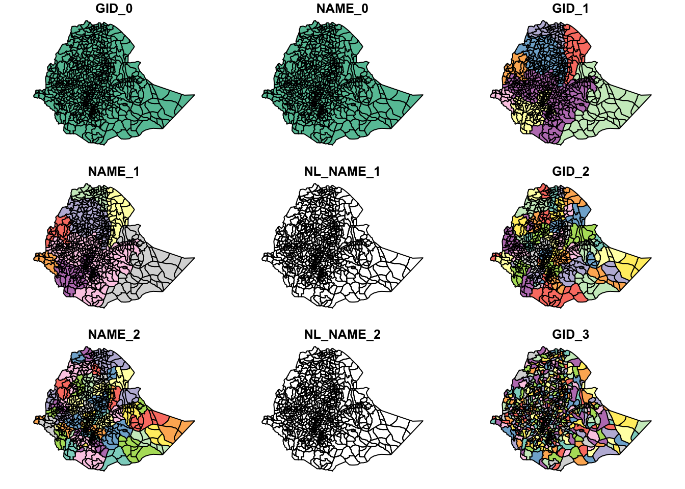
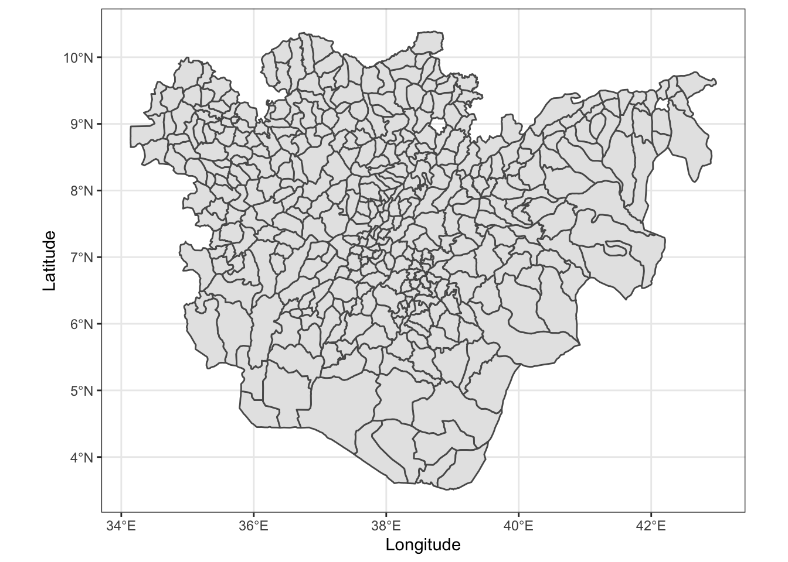
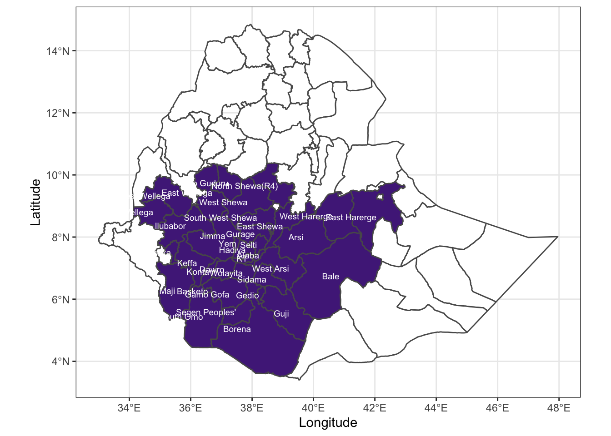

Creating Maps with ggplot2
Introduction
In this exercise we will use simple features and ggplot2 to create a map of Ethiopia and then a map of two regions highlighting the regions within a larger map of Ethiopia. Once we have the base maps of the country and regions we will add points and zones to the map to indicate survey sites.
library(dplyr)
library(GADMTools)
library(ggplot2)
library(readr)
library(sf)
library(stringr)Create Country Level Map of Ethiopia
This is our base layer, Ethiopia, downloaded from https://www.gadm.org. GADM is a free resource to use for non-commercial and research purposes. You can find out more at https://gadm.org/about.html.
Using download.file(), we will download an sf` file.
ethiopia_rds <-
"https://biogeo.ucdavis.edu/data/gadm3.6/Rsf/gadm36_ETH_3_sf.rds"
ethiopia_sf <- file.path(tempdir(), "gadm36_ETH_3_sf.rds")
if (toupper(Sys.info()["sysname"]) == "WINDOWS") {
download.file(ethiopia_rds,
ethiopia_sf,
method = "wininet",
mode = "wb")
} else {
download.file(ethiopia_rds, ethiopia_sf, method = "auto")
}
ethiopia_sf <- readRDS(ethiopia_sf)
plot(ethiopia_sf)
Create a Map Using ggplot2
Using ggplot2, we have more control over how the data are displayed than using the base plot() command.
First, plot the whole country using ggplot2’s geom_sf() and the ethiopia_sf object.
ethiopia_ggplot <- ggplot(ethiopia_sf) +
geom_sf(fill = "white")
ethiopia_ggplot
We can see that there are several zones, shown as the smaller polygons within the larger country outline, in this data set.
Add Labels to the Regions
The GADM data have several columns to work with. You can find out what these are by using the names().
names(ethiopia_sf)## [1] "GID_0" "NAME_0" "GID_1" "NAME_1" "NL_NAME_1" "GID_2"
## [7] "NAME_2" "NL_NAME_2" "GID_3" "NAME_3" "VARNAME_3" "NL_NAME_3"
## [13] "TYPE_3" "ENGTYPE_3" "CC_3" "HASC_3" "geometry"We can group the GADM data using dplyr::group_by() to group the polygons into larger regions and add labels to them. In this data set, there are three levels and three columns we might be interested in.
NAME_0refers to the country level and gives a whole country outline,NAME_1refers to the second level of administrative boundaries, e.g. states within the USA,NAME_2refers to the third level of administrative boundaries, e.g. counties or parishes within a US state, andNAME_3refers to the fourth level of administrative boundaries, e.g. districts within counties in a US state.
Grouping by any value, 0 - 2 will aggregate or dissolve the lines within the map producing larger polygons. Here we will group by NAME_1 for the regions.
ethiopia_regions_sf <-
ethiopia_sf %>%
group_by(NAME_1) %>%
summarise() %>%
ungroup() %>% st_as_sf()
ethiopia_regions_ggplot <-
ggplot(ethiopia_regions_sf) +
geom_sf(fill = "white") +
geom_sf_text(
aes(label = NAME_1),
size = 2.5,
hjust = 1
)
ethiopia_regions_ggplot
Proper Labels and Theme
Properly label the x and y-axis and set the theme. The ggplot2 theme, theme_bw() is nice to use with maps, so we will apply that here as well.
ethiopia_regions_ggplot <-
ethiopia_regions_ggplot +
xlab("Longitude") +
ylab("Latitude") +
theme_bw()
ethiopia_regions_ggplot
Creating maps of Individual Regions
To create a map of only Oromia and Southern Nations, Nationalities and Peoples’ Region (SNNP), subset the sf object, ethiopia_sf such that it contains only the data for Oromia and SNNP.
Filter Oromia and SNNP
ethiopia_regions_sf <- filter(ethiopia_sf,
NAME_1 == "Oromia" |
NAME_1 == "Southern Nations, Nationalities and Peoples")
ethiopia_regions_sf## Simple feature collection with 396 features and 16 fields
## geometry type: MULTIPOLYGON
## dimension: XY
## bbox: xmin: 34.14 ymin: 3.51 xmax: 42.98 ymax: 10.39
## geographic CRS: WGS 84
## First 10 features:
## GID_0 NAME_0 GID_1 NAME_1 NL_NAME_1 GID_2 NAME_2 NL_NAME_2
## 1 ETH Ethiopia ETH.8_1 Oromia <NA> ETH.8.1_1 Arsi <NA>
## 2 ETH Ethiopia ETH.8_1 Oromia <NA> ETH.8.1_1 Arsi <NA>
## 3 ETH Ethiopia ETH.8_1 Oromia <NA> ETH.8.1_1 Arsi <NA>
## 4 ETH Ethiopia ETH.8_1 Oromia <NA> ETH.8.1_1 Arsi <NA>
## 5 ETH Ethiopia ETH.8_1 Oromia <NA> ETH.8.1_1 Arsi <NA>
## 6 ETH Ethiopia ETH.8_1 Oromia <NA> ETH.8.1_1 Arsi <NA>
## 7 ETH Ethiopia ETH.8_1 Oromia <NA> ETH.8.1_1 Arsi <NA>
## 8 ETH Ethiopia ETH.8_1 Oromia <NA> ETH.8.1_1 Arsi <NA>
## 9 ETH Ethiopia ETH.8_1 Oromia <NA> ETH.8.1_1 Arsi <NA>
## 10 ETH Ethiopia ETH.8_1 Oromia <NA> ETH.8.1_1 Arsi <NA>
## GID_3 NAME_3 VARNAME_3 NL_NAME_3 TYPE_3 ENGTYPE_3 CC_3
## 1 ETH.8.1.1_1 Amigna <NA> Woreda District 040810
## 2 ETH.8.1.2_1 Aseko <NA> Woreda District 040802
## 3 ETH.8.1.3_1 Bele Gesgar <NA> Woreda District 040823
## 4 ETH.8.1.4_1 Chole <NA> Woreda District 040809
## 5 ETH.8.1.5_1 Degeluna Tijo <NA> Woreda District 040815
## 6 ETH.8.1.6_1 Diksis <NA> Woreda District 040822
## 7 ETH.8.1.7_1 Dodota <NA> Woreda District 040805
## 8 ETH.8.1.8_1 Gololcha Arsi <NA> Woreda District 040803
## 9 ETH.8.1.9_1 Guna <NA> Woreda District 040819
## 10 ETH.8.1.10_1 Hitosa <NA> Woreda District 040807
## HASC_3 geometry
## 1 <NA> MULTIPOLYGON (((40.2 7.877,...
## 2 <NA> MULTIPOLYGON (((40.22 8.556...
## 3 <NA> MULTIPOLYGON (((40.2 7.877,...
## 4 <NA> MULTIPOLYGON (((40.09 8.015...
## 5 <NA> MULTIPOLYGON (((39.14 7.63,...
## 6 <NA> MULTIPOLYGON (((39.43 7.91,...
## 7 <NA> MULTIPOLYGON (((39.3 8.201,...
## 8 <NA> MULTIPOLYGON (((40.35 8.323...
## 9 <NA> MULTIPOLYGON (((39.79 8.247...
## 10 <NA> MULTIPOLYGON (((39.43 7.893...Plot Oromia AND SNNP
After filtering Oromia and SNNP and creating a new object, we can plot it now.
ggplot(data = ethiopia_regions_sf) +
geom_sf() +
xlab("Longitude") +
ylab("Latitude") +
theme_bw()
Highlighting Regions Within the Country
Using the ethiopia_sf and ethiopia_regions_sf objects that we have created, it is possible to create a map that highlights one state and labels it using the postal code, in this case Oromia and SNNP. Note that we use the data argument twice here. Once for the base Ethiopia map and once for the map of Oromia and SNNP that we use to highlight the regions on the map.
ggplot(data = ethiopia_sf) +
geom_sf(fill = "white") +
geom_sf(data = ethiopia_regions_sf,
aes(fill = NAME_1)) +
scale_fill_brewer(palette = "Dark2") +
xlab("Longitude") +
ylab("Latitude") +
theme_bw()
Adding and Labelling Points on a Map
Now we will build on the maps we created by adding points to a map of Oromia and SNNP with latitude and longitude values.
Create data.frame of Sampling Locations
Using the previously created ethiopia_regions_sf object, we will plot the locations of cities or towns in Oromia. Now we will download the cleaned survey data from Del Ponte and Belechew (2020) directly into our R session.
coffee_sampling <-
read_csv(
"https://raw.githubusercontent.com/emdelponte/paper-coffee-rust-Ethiopia/master/data/survey_clean.csv"
)Converting Sites to an sf Object
While we could plot everything using geom_point(), if we convert the data.frame to an sf type object, it is much more flexible for mapping with other sf objects.
coffee_sampling_sf <-
st_as_sf(coffee_sampling,
coords = c("lon", "lat"),
crs = 4326)Now we’re ready to add the points to the map!
Adding Sampling Locations to Map
Adding the points to the map works in the same fashion as adding layers in other ggplot2 objects. For this final map, we will create some new layers to display. First, we will create a layer of the zones that where surveys were conducted by filtering the zone names. Second, we will create a new layer of the regions that contatain the zones that were surveyed, Orima and Southern Nations, Nationalities and Peoples, and rename Southern Nations, Nationalities and Peoples to SNNP to clean up the legend in the figure. Next we will create the base Ethiopia layer to display a sillhouette of the country for the base layer.
Then we will build the map using ggplot2.
ethiopia_zones_sf <- ethiopia_regions_sf %>%
filter(
NAME_2 %in% c(
"Jimma",
"Mirab Welega",
"Sidama",
"Sheka",
"Keffa",
"Bench Maji",
"Bale",
"Gedeo",
"Ilubabor"
)
)
ethiopia_regions_sf <-
ethiopia_regions_sf %>%
group_by(NAME_1) %>%
summarise() %>%
mutate(NAME_1 = gsub("Southern Nations, Nationalities and Peoples", "SNNP",
NAME_1)) %>%
ungroup() %>% st_as_sf()
ethiopia_sf <-
ethiopia_sf %>%
group_by(NAME_0) %>%
summarise() %>%
ungroup() %>% st_as_sf()
ggplot() +
geom_sf(data = ethiopia_sf,
col = NA) +
geom_sf(data = ethiopia_regions_sf,
aes(linetype = NAME_1),
fill = "white") +
geom_sf(data = ethiopia_zones_sf,
aes(fill = NAME_2),
col = NA) +
scale_linetype(
labels = function(x)
str_wrap(x, width = 5)
) +
scale_fill_brewer(palette = "Set3") +
geom_sf(data = coffee_sampling_sf,
size = 2,
color = alpha("black", 0.35)) +
xlab("Longitude") +
ylab("Latitude") +
labs(
title = "Ethiopian Coffee Leaf Rust Survey Sites",
caption = "Data from GADM, gadm.org, and Del Ponte and Belachew (2020)",
fill = "Zone",
linetype = "Region"
) +
theme_bw()
The final figure includes a title, a data acknowledgement and clearly labeled legend describing the map.